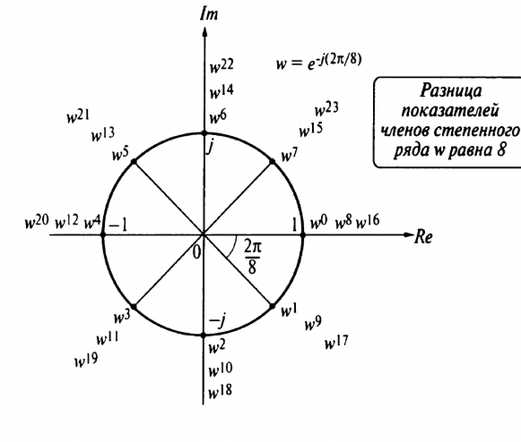

Быстрое преобразование Фурье (БПФ) - это наиболее оптимальный алгоритм вычисления дискретного преобразования Фурье, использующий меньше арифметических операций, чем прямое вычисление ДПФ по формуле. Результат работы БПФ и ДПФ одинаковый, но за счет того, что в БПФ совершается меньшее количество операций, в результате расчёта набегает меньшая погрешность вычислений. То есть, небольшая возможная разница в результатах вычисления БПФ и ДПФ заключается именно в разнице вычислительных ошибок.
Дискретное преобразование Фурье для сигнала из N отсчётов имеет вид:
$$ X[k] = \frac{1}{N} \sum_{n=0}^{N-1}x[n]e^{-j\frac{2\pi}{N}kn}$$
Введём число
$$ w = e^{-j \frac{2\pi}{N}}$$
тогда
$$ X[k] = \frac{1}{N} \sum_{n=0}^{N-1}x[n]w^{kn}$$
Рассмотрим сигнал из N = 8 отсчётов:
$$ x[n] = \{x_0, x_1, x_2, ..., x_7\} $$
Тогда, k-й спектральный отсчёт будет равен:
$$ X[k] = \frac{1}{8}(w^0 x_0 + w^k x_1 + w^{2k} x_2 + ... + w^{7k} x_7)$$
Для реализации ДПФ по формуле нам потребуется 64 умножения на комплексный коэффициент w в некоторой степени и 7*8=56 сложений. Для сигнала из N отсчётов
число умножений составит N * N умножений и N * (N - 1) сложений.
Распишем вычисление всех 8 спектральных коэффициентов Х в виде матрицы ДПФ:
$$
\begin{pmatrix}
X[0] \\
X[1] \\
X[2] \\
\vdots \\
X[7]
\end{pmatrix} =
\frac{1}{8}
\begin{pmatrix}
w^0 & w^0 & w^0 & w^0 & w^0 & w^0 & w^0 & w^0 \\
w^0 & w^1 & w^2 & w^3 & w^4 & w^5 & w^6 & w^7 \\
w^0 & w^2 & w^4 & w^6 & w^8 & w^{10} & w^{12} & w^{14} \\
\dots \\
w^0 & w^7 & w^{14} & w^{21} & w^{28} & w^{35} & w^{42} & w^{49}
\end{pmatrix}
\begin{pmatrix}
x[0] \\
x[1] \\
x[1] \\
\vdots \\
x[7]
\end{pmatrix}$$
Комплексный коэффициент w соответствует повороту на π/4 радиан по часовой стрелке на единичной окружности, тогда различные степени w будут соответствовать кратным поворотам:
Можно увидеть, что каждые N поворотов мы будем попадать в одну и ту же точку на единичной окружности. Тогда, оказывается достаточным вычислить только первые N степеней w, для заполнения матрицы в уравнении выше, а более высокие степени n будут равны w, возведенному в степень, равную остатку от деления n на N: $$w^n = w^{nmodN}$$ Тогда, матричное уравнение для 8-точечного ДПФ упрощается следующим образом: $$ \begin{pmatrix} X[0] \\ X[1] \\ X[2] \\ \vdots \\ X[7] \end{pmatrix} = \frac{1}{8} \begin{pmatrix} w^0 & w^0 & w^0 & w^0 & w^0 & w^0 & w^0 & w^0 \\ w^0 & w^1 & w^2 & w^3 & w^4 & w^5 & w^6 & w^7 \\ w^0 & w^2 & w^4 & w^6 & w^0 & w^2 & w^4 & w^6 \\ \dots \\ w^0 & w^7 & w^6 & w^5 & w^4 & w^3 & w^2 & w^1 \end{pmatrix} \begin{pmatrix} x[0] \\ x[1] \\ x[1] \\ \vdots \\ x[7] \end{pmatrix}$$ Таким образом может быть уменьшено количество вычислений комплексных коэффициентов. Для уменьшения количества операций сложения и умножения применяются алгоритмы, построенные на принципе "разделяй и властвуй" (divide-and-conquer algorithms) - рекурсивные алгоритмы, разбивающие исходную задачу на подзадачи того же типа, но меньшего размера. В алгоритмах БПФ обычно применяется рекурсивное деление временных или спектральных отсчётов на две части.
Пусть исходный сигнал состоит из чётного количества отсчётов. Разделим все отсчёты исходного сигнала на чётные и нечётные (опустим множитель 1/N в дальнейших формулах): $$ X[k] = \sum_{n=0}^{N-1}x[n]e^{-j\frac{2\pi}{N}kn} = \sum_{m=0}^{\frac{N}{2}-1}x[2m]e^{-j\frac{2\pi}{N}2mk} + \sum_{m=0}^{\frac{N}{2}-1}x[2m+1]e^{-j\frac{2\pi}{N}(2m+1)k}$$ Соберем все чётные отсчёты в последовательность y[m], а нечётные - в z[m]: $$y[m] = x[2m], z[m] = x[2m+1]$$ Тогда, $$ X[k] = \sum_{m=0}^{\frac{N}{2}-1}y[m]e^{-j\frac{2\pi mk}{\frac{N}{2}}} + e^{-j\frac{2\pi k}{N}}\sum_{m=0}^{\frac{N}{2}-1}z[m]e^{-j\frac{2\pi mk}{\frac{N}{2}}} = Y[k] + e^{-j\frac{2\pi k}{N}} Z[k]$$ Получается, что исходное ДПФ над последовательностью размером N мы разбили на два ДПФ меньшего размера, N/2. Если число отсчётов в исходном сигнале равно некоторой степени двойки, то такое деление временных отсчётов на чётные и нечётные можно рекурсивно проводить до тех пор, пока не останется всего два отсчёта, для которых вычисление ДПФ тривиально и равно одному комплексному умножению и одному сложению.
Но, т.к. размерность исходного преобразования - N, то при вычислении ДПФ от половинной длины исходного сигнала, мы будем получать и половинное количество спектральных коэффициентов, то есть расчет коэффициентов будет выполнен для 0 ≤ k < N/2. Для нахождения спектральных коэффициентов, соответствующих N/2 ≤ k < N, воспользуемся свойством периодичности спектра ДПФ: $$ Y[k + \frac{N}{2}] = Y[k] $$ $$ Z[k + \frac{N}{2}] = Z[k] $$ Тогда, при N/2 ≤ k < N: $$ X[k] = Y[k - \frac{N}{2}] + e^{-j\frac{2\pi k}{N}}Z[k - \frac{N}{2}] = Y[k - \frac{N}{2}] + e^{-j\frac{2\pi}{N}(k - \frac{N}{2})}Z[k - \frac{N}{2}]$$